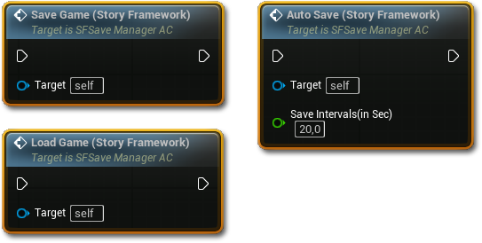
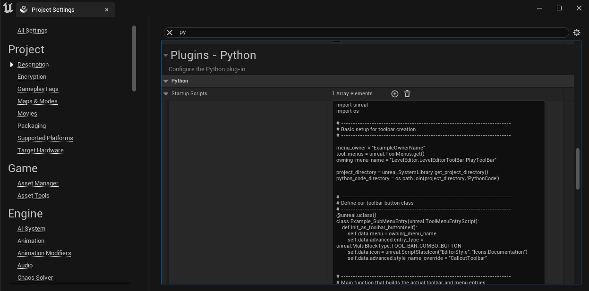
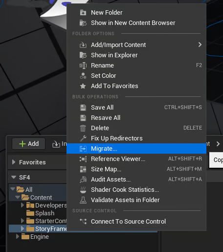
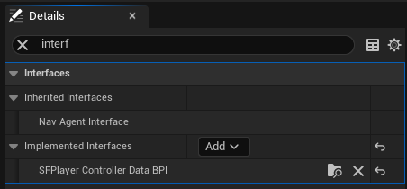
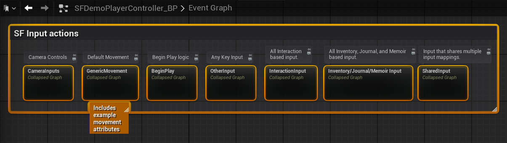
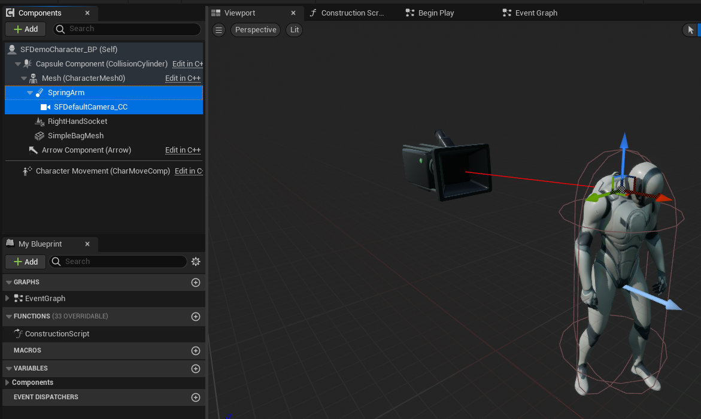
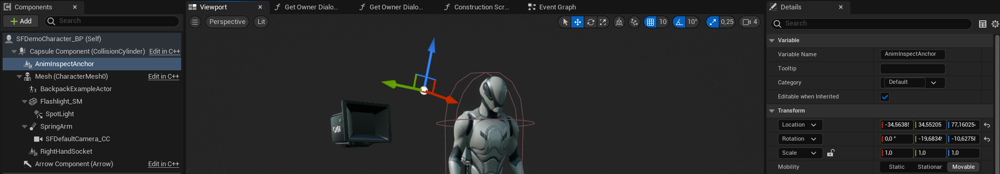
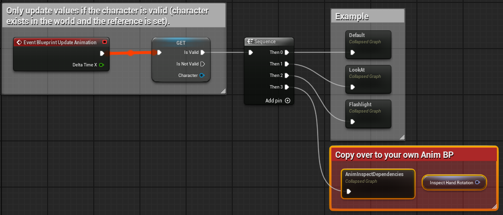
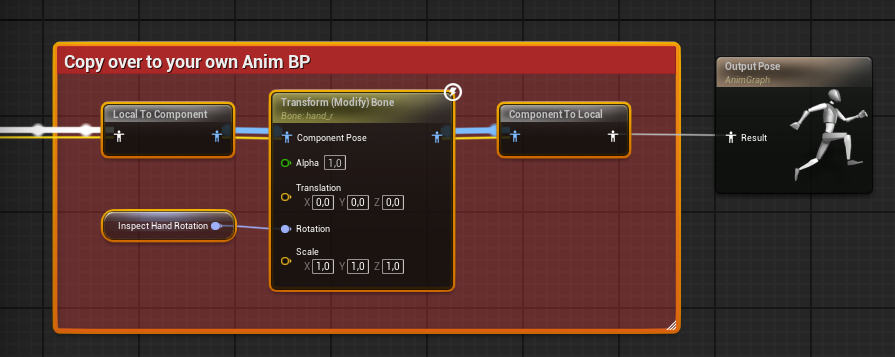

存档与集成：搬进你自己的工程
先用官方示例玩明白，再把它搬进你自己的项目。这一章给出存档系统的三个入口，以及一份可以照做的迁移清单（含碰撞通道、接口、相机、输入、GameInstance、移动限制）。
大多数人最终都会走到这一步：不想用它的示例工程，而是想把 SF 装进自己已经做了一半的项目。 官方的集成指南顺序有点跳，这里按“先设置、再搬、后接线、最后收尾”重排成一条线。
存档：三个按钮，一个文件
SF 的存档和虚幻原生做法一致：把要保存的数据写进一个 SaveGame 对象，存成一个文件。
区别在于，它已经帮你把背包、任务、日志、回忆录、剧情标记、已生成的 Actor 全打包好了。
| 入口 | 说明 |
|---|---|
Save Game | 手动存档（通常绑在存档点或菜单） |
Auto-Save | 自动存档（建议在 BeginPlay 里调用一次，或配合 SaveOverlap_BP） |
Load Game | 读档（一般由主菜单触发） |
这三个都在 SFSaveManager_AC 上，用管理器引用调用即可。
另外 SFGameInstance_BP 里也有配套逻辑，用于“从主菜单进入关卡时把数据读回来”。

Auto Save 多一个“存盘间隔（秒）”，其余两个只有 Target。GameInstance 是跨越关卡不会销毁的对象。把“当前存档数据”和“SFV 设置”放在这里， 才能做到“从关卡 A 走到关卡 B，背包里的东西还在”。 5.1 更新特意把 SFV 从玩家控制器挪到了 GameInstance，就是为了不再依赖“玩家必须存在”。
保存你自己的变量
官方给了一段视频讲这件事，思路可以概括为三步：
- 加字段：打开 SF 的
SaveGame蓝图类，加一个你需要的变量（比如PlayerGold、BossDefeated）。 - 写入：在你改变它的地方，同时更新这个字段（或重写
Save Game函数，在保存前把值同步进去）。 - 读出：在
Load Game之后，把字段值取回来赋给你的游戏对象；读档完成的事件里做这件事最稳。
如果数据本身是“存不存在”的布尔状态（比如“某个门开过没有”），直接用一个剧情标记代替：
调 Edit Consequential Tags 打个标记，存档会自动带上它。这样连 SaveGame 都不用改。
迁移清单：九步搬进自己的项目
迁移会修改你的项目设置、玩家控制器、角色蓝图和输入配置。先复制一份整个工程文件夹， 或在版本控制里提交一次。这不是客套话——迁移出错时，回滚比修复快得多。
-
加碰撞通道（最容易忘）
Project Settings → Collision，新增一个 Trace Channel，命名必须是SFInteraction， 默认响应设为Ignore。少了这一步，交互射线打不到任何东西，且没有任何报错。 -
（可选）装快捷工具栏
Project Settings → Plugins → Python → Startup Scripts里加作者的脚本，重启后顶部出现Story Framework菜单。建议迁移完成后再装，否则路径可能对不上。
位置： Project Settings → Plugins → Python → Startup Scripts，新建一条把作者的脚本粘进去，然后重启编辑器。 -
迁移内容
打开 SF 工程，右键
StoryFramework文件夹 →Migrate→ 选择你自己项目的Content目录。 完成后在你自己项目里应该出现同名文件夹。
在 SF 工程里对着 StoryFramework文件夹右键，选 Migrate…，然后指定目标的Content目录。 -
改造玩家控制器
打开你的 Player Controller（没有就新建一个）：
- 添加五个组件（搜
Interaction、Inventory Manager、Camera Manager、Sequence Manager、Save Manager）； - 在
Class Settings里实现接口SFPlayerControllerData_BPI； - 打开这个接口函数
Get SF Components，把五个组件分别连到对应输出； - 在
Class Defaults里把Player Camera Manager Class设为 SF 的相机管理器类； - 把 SF 的输入事件复制进你的控制器（如果你已有自己的移动方案，删掉其中的
Generic Movement图表）。

加完之后组件面板里应该是这五个（类名都以 _AC结尾）。
在 Class Settings 的 Interfaces 里加上 SFPlayerControllerData_BPI。
实现接口后，在 Get SFComponents里把五个组件分别接到对应的返回值上——这一步没做，交互和背包全都不会工作。
在 Class Defaults 里把 Player Camera Manager Class换成 SF 的相机管理器，否则镜头函数不生效。
SF 的输入都封装在这几个折叠图表里（SF Input actions），整块复制过来即可；最左边那个是示例的移动逻辑，可以删。 - 添加五个组件（搜
-
改造玩家角色
把原来的
CameraComponent换成SFDefaultCamera_CC，并确保它挂在弹簧臂（Spring Arm）下。 如果你的角色比例与 UE 默认 Manny 不同，记得调相机位置。
组件层级： Capsule → Mesh → SpringArm → SFDefaultCamera_CC。相机一定要挂在弹簧臂下面，否则第三人称的推拉会失效。 -
（仅当要用动画检视）接入动画依赖
在角色蓝图里加
AnimInspectAnchor_SC场景组件（一般挂在胶囊体下），位置调到右肩附近； 再从 SF 的ABP_Manny里把标注为「Copy over to your own Anim BP」的两段逻辑 （事件图表一段、动画图表一段）复制到你的动画蓝图里，编译并创建缺失的InspectHandRotation变量。
锚点组件的默认变换值：放在角色右肩前方（数值可能因角色体型而异，进游戏看效果再微调）。 
动画蓝图的事件图表：把红框里 Copy over to your own Anim BP 那段接在 BlueprintUpdateAnimation后面。
动画图表里的那段： Transform (Modify) Bone驱动手部旋转，输入来自刚才的Inspect Hand Rotation。 -
接 BeginPlay
在控制器或角色的
BeginPlay里：- 调用
Update Input Mapping Context，把 SF 的SFGameplay_IMC应用给玩家； - （可选）调用
Auto-Save。
- 调用
-
设置 GameInstance
Project Settings → Maps & Modes（或 Game Instance 相关设置）里，把 GameInstance Class 设为SFGameInstance_BP。否则 SFV 引用与存档逻辑会缺失。 -
补上移动与视角限制（不用 SF 自带移动时）
在角色的移动输入里接
SF Movement Condition；在视角输入里复制 SF 的SF Camera Look Condition图表。这样“对话时禁止移动”“过场锁定视角”才会生效。
迁移后怎么验证
| 测试 | 通过标准 |
|---|---|
放一个 InteractableBase_BP 子类进关卡 | 看向它有提示，按键有反应 |
| 拾取道具 | 出现在背包，图标正确 |
| 打开 UMC | 能切换标签、能关闭、关闭后能移动 |
| 触发一次对话 | 镜头切换、字幕出现、选项可点、能正常退出 |
| 存档 → 退出 → 读档 | 背包、任务、日志都还在 |
| 切到第一人称再切回 | 相机平滑、不穿模 |
5.2 版本变更（你手上多半是这个版本）
| 变化 | 对你的影响 |
|---|---|
| 新增「动画检视」模式 | 多了第 5 种检视方式，需要做第 5 步的动画依赖 |
| 检视与字幕控件重做布局 | 如果你改过这两个控件，需要重新套用 |
| SFV 增加对话与相机的可配置项 | 更多东西可以不改蓝图直接调 |
修复 CustomViewInteractArea 反复进出会卡死的问题 | 固定镜头区域可以放心用了 |
| 相机管理器支持 Legacy Camera Shake | 可以用旧版相机抖动资产 |
| 新增「Data Tables」快捷菜单 | 找数据表更快 |
| 剧情标记相关函数增强 | 批量增删标记更方便 |
官方支持区间是 5.1–5.6，5.1 更新日志又提到已支持 5.7。你在 5.6 上使用属于“正中间”的版本，风险很低。
如果遇到引擎升级导致的编译报错，优先检查：增强输入（Enhanced Input）相关设置、
以及 CommonUI 是否被意外启用（SF 尚未迁移到 CommonUI）。
迁移阶段的高频故障
| 症状 | 最可能的原因 |
|---|---|
| 交互完全无反应，也没有报错 | 没加 SFInteraction 碰撞通道 |
| 提示出现但按 E 没反应 | 控制器没实现 SFPlayerControllerData_BPI，或 Get SF Components 没连线 |
| 打开菜单后无法关闭 / 关不掉焦点 | 输入映射上下文没切回来，或 WidgetMenu_IMC 未应用 |
| 读档后背包是空的 | GameInstance 不是 SFGameInstance_BP |
| 对话时玩家还能乱跑 | 没接 SF Movement Condition |
| 切关卡后所有进度丢失 | 数据没存进 SaveGame，或读档时机早于 GameInstance 初始化 |
| 中文显示成方块 | 字体资产不含中文字形——需要换字体（见下一章） |
最后两章：排错手册与速查表。